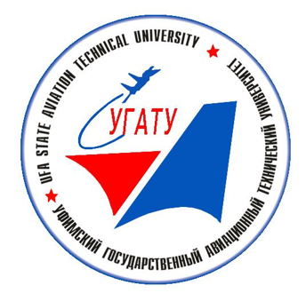

ФГБОУ ВО «Уфимский государственный авиационный технический университет»
Факультет ИРТ
Кафедра АСУ
Математические и инструментальные методы принятия решений
Лабораторная работа 5. Построение экспертной системы с Web-технологий

Выполнил: студент группы РБП-108м
Набиев А.И.
Проверил: Сакаев Руслан Джалилевич
Даннная экспертная система (ЭС) предназначена для помощи в подборе анимационного произведения японского происхождения (не всегда), именуемого в простонародье АНИМЭ